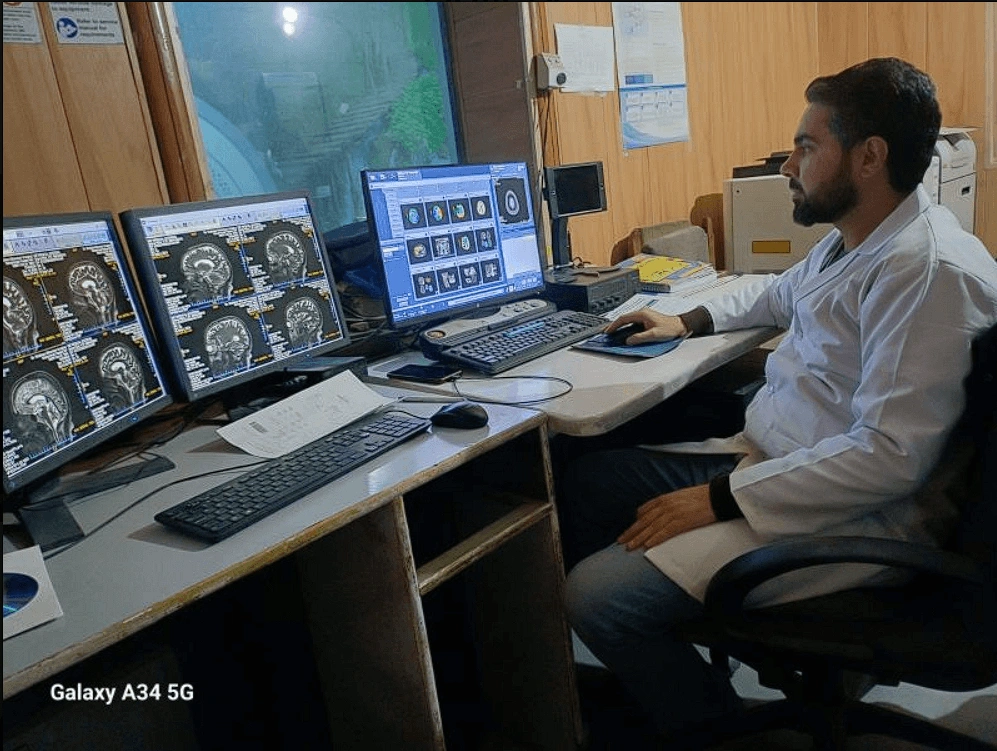
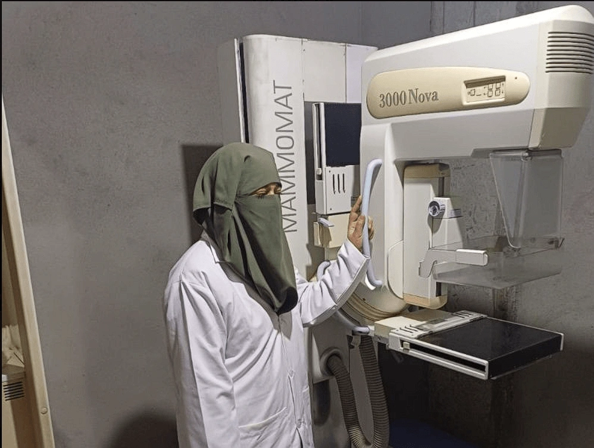
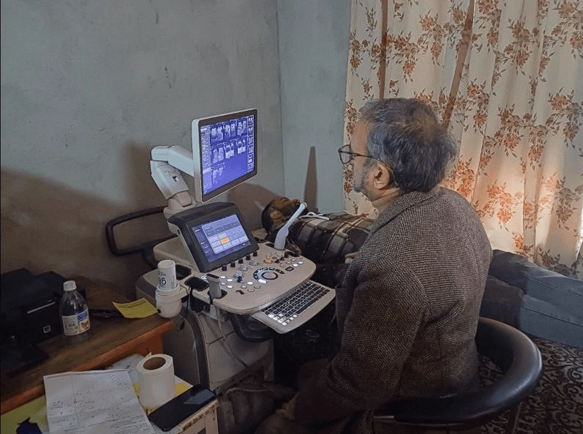

×

Introducing United Imaging's state of the art uMI550 Digital PET-CT scanner. Delivering sub-1.5mm diagnostic clarity at up to 50% lower radiation dose.
For PET-CT Scan contact +91 99069 31316 (Mr. Maqsood)
Why digital technology represents a revolutionary leap forward in safety, speed, and accuracy for patients in Jammu & Kashmir.
| Feature | Analog PET-CT | Digital PET-CT (uMI550) | Clinical Advantage |
|---|---|---|---|
| Radiation Dose | ~1 mCi / 10 kg | ~0.5 mCi / 10 kg | 50% Lower Radiation Exposure |
| Scan Time | 15 - 20 minutes | 5 - 6 minutes | 3x Faster Scan (Saves Critical Time) |
| Spatial Resolution | ~5 - 6 mm | ~2 - 3 mm | Sharper Images & Smaller Lesion Detection |
| Detector Type | Photomultiplier Tube (PMT) | Digital Silicon Photomultiplier (SiPM) | Significantly Higher Scan Sensitivity |
| Patient Comfort | Longer Scan Time | Shorter Scan Time | More Comfortable Patient Experience |
Direct photo-conversion for ultra-sharp signal clarity.
Time-of-Flight tech reduces image noise and enhances contrast.
Point Spread Function maintains spatial accuracy across the FOV.
Aids oncology detection with sub-1.5 mm voxel sensitivity.
Dr. Mukhtars Imaging Centre offers a full suite of state-of-the-art diagnostic scans, each processed by leading local radiologists.
United Imaging uMI550 J&K's first 80-Slice Digital PET-CT. Low-dose tumor scans, PSMA (prostate), DOTANOC (neuroendocrine), with 50% lower radiation.
Advanced 1.5T MRI for detailed brain, spine, joint, and soft tissue diagnostics. Fully optimized for patient safety and clarity.
High-resolution Computed Tomography for rapid cross-sectional body checks, and emergency internal scanning.
Comprehensive high-frequency sound wave diagnostic scans, including color doppler, vascular imaging, and detailed maternity diagnostics.
Low-dose diagnostic X-ray screening specifically calibrated for high-precision breast health and early detection of changes.
High-resolution digital X-rays with minimized exposure to diagnose respiratory, bone, and joint conditions efficiently.
Gold-standard whole-body metabolic imaging for oncology staging, therapy response assessment, and surveillance.
Targeted molecular imaging for prostate cancer detection, staging, and biochemical recurrence assessment.
Targeted molecular imaging for neuroendocrine tumour localization and characterization.
Advanced fibroblast activation protein imaging for selected tumour and inflammatory assessments.
Highly sensitive imaging for localizing occult insulinoma lesions.
Functional brain imaging for epilepsy, dementia, and other neurological evaluations.
Specialized dopamine pathway imaging for movement disorders and related neurological conditions.
Dr. Mukhtars Clinic provides a comprehensive suite of clinical diagnostics and specialized imaging services:
High-precision Hysterosalpingography for diagnostic fertility profiles.
Thyroid, breast, scrotum, and superficial soft tissue ultrasound imaging.
High-resolution internal pelvic ultrasound for gynaecological and obstetric evaluation.
Peripheral nerve and musculoskeletal ultrasound for joint, tendon, and nerve disorders.
High-resolution chest, joint, orthopedic, and emergency bone integrity imaging.
Routine pregnancy, gynecological, and abdominal health ultrasound scans.
Limb, neck/carotid, renal, and abdominal vascular blood flow studies.
Digital PET-CT in J&K
Established in 1990, Dr. Mukhtars Imaging Centre (also listed as Dr. Mukhtars Clinic) has stood as a beacon of accurate diagnostic medicine in Srinagar for over 35 years. Situated conveniently opposite the Government Medical College in Karan Nagar, we house the region's most advanced radiological equipment under the supervision of expert consultants.
Our primary philosophy centers on patient comfort and diagnostic absolute reliability, ensuring that local physicians can guide treatment with absolute confidence.
Take a visual tour of Dr. Mukhtars Imaging Centre, showcasing our state-of-the-art diagnostic equipment and patient care facility.
Brochure


Important guidance on scheduling, safety protocols, and preparation guidelines for your upcoming scans.
PET-CT (Positron Emission Tomography - Computed Tomography) is a highly specialized molecular imaging method. By combining functional cellular info (PET) with structural details (CT), it maps metabolic activity in tissues. This is primarily used for identifying cancer stages, monitoring chemotherapy responses, and detecting neurological or cardiac conditions. All reports undergo double-read by our senior nuclear medicine specialists and radiologists to ensure diagnostic accuracy and clinical reliability.
Our uMI550 scanner uses digital silicon photomultipliers (SiPM) instead of older analog tubes. This creates higher resolution, allowing us to spot tiny abnormal lesions (sub-1.5mm effective resolution). It also cuts the required radioactive tracer dose by half and speeds up scan times to just 5-6 minutes, making it safer and more comfortable.
Typically, you must fast (no food, tea, coffee, or sugary drinks, only plain water) for 4-6 hours before the scan. Avoid heavy exercise for 24 hours prior. If you are diabetic, notify our staff immediately so we can coordinate your insulin timing. For full detailed steps, please visit our dedicated Digital PET-CT page.
Yes. Because PET-CT involves the injection of a low-dose radioactive tracer (such as FDG), we require a prescription/referral from a registered specialist (like an oncologist, cardiologist, or physician) to ensure the scan is clinically justified and correctly targeted.
Most radiological studies like CT and MRI, expect turnaround time of 24-48 hours. Reports for emergency cases are expedited as directed by the incharge radiologist. USG reports are dispatched immediately.
Opposite Government Medical College,
Karan Nagar, Srinagar, J&K, 190010
Monday - Saturday: 08:00AM - 07:00PM
Sunday: 08:00AM - 05:00PM